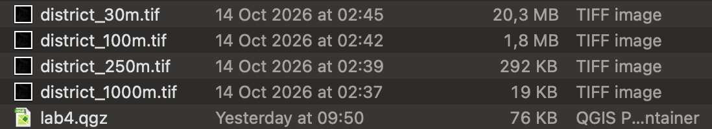
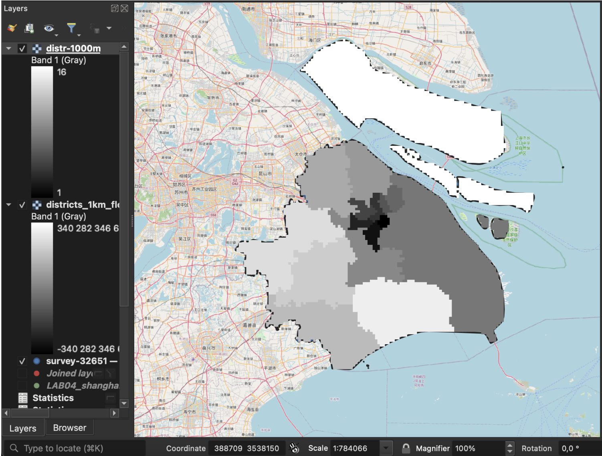
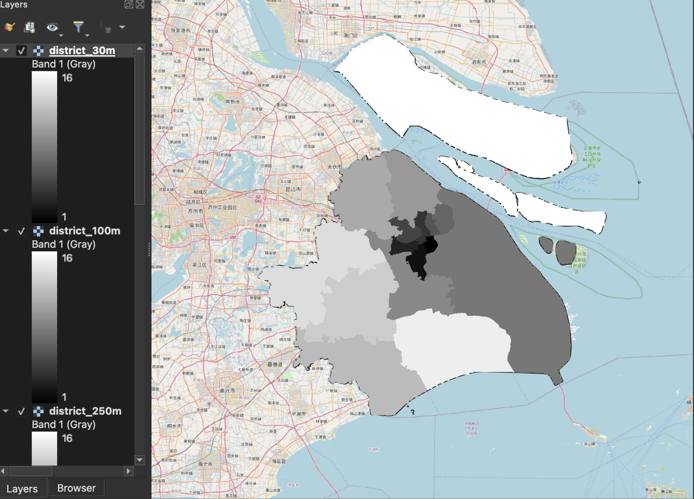
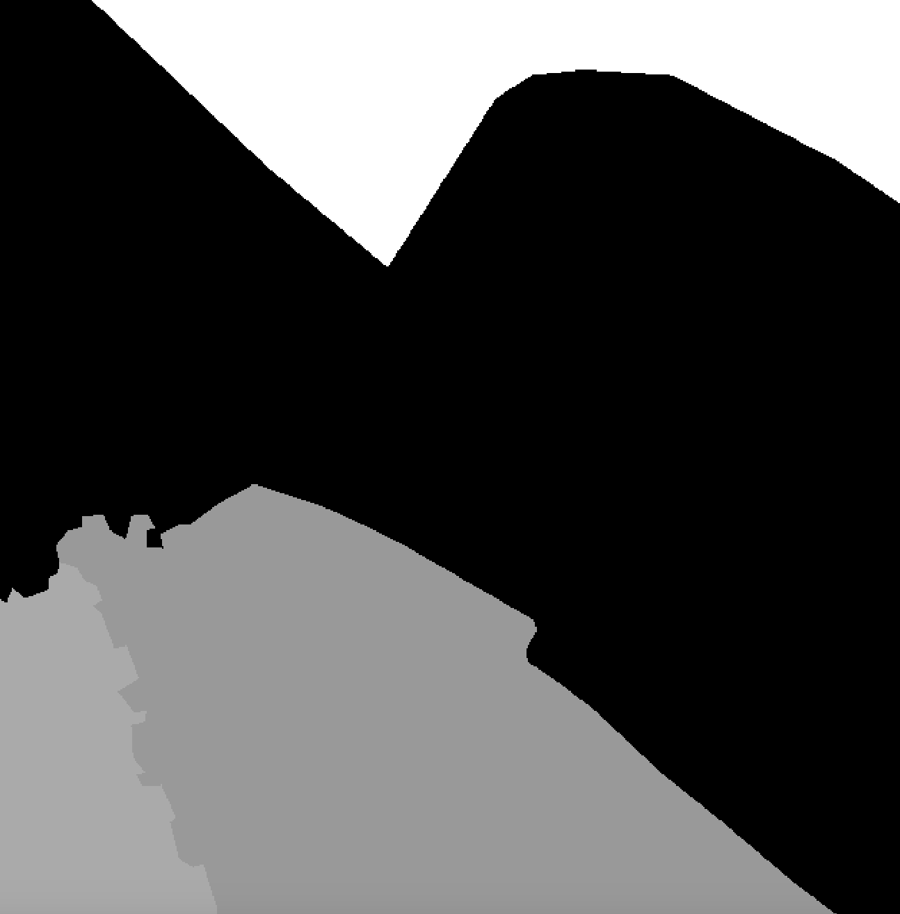
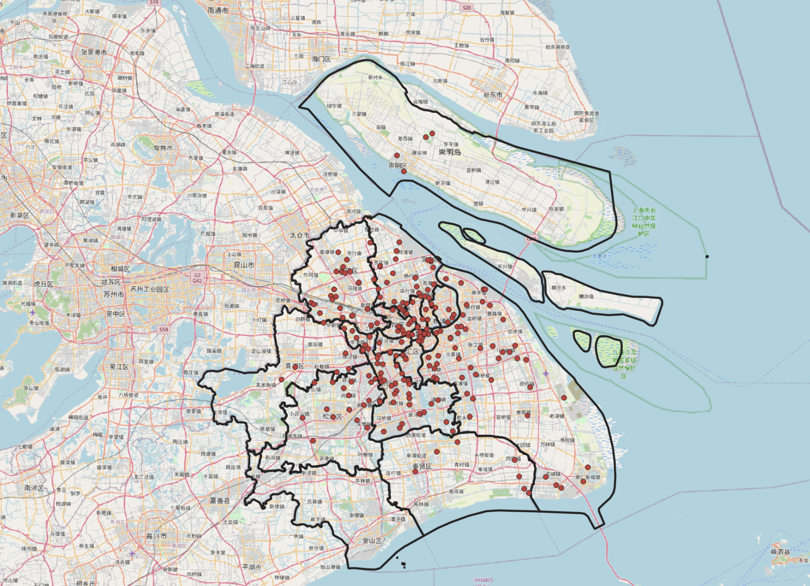
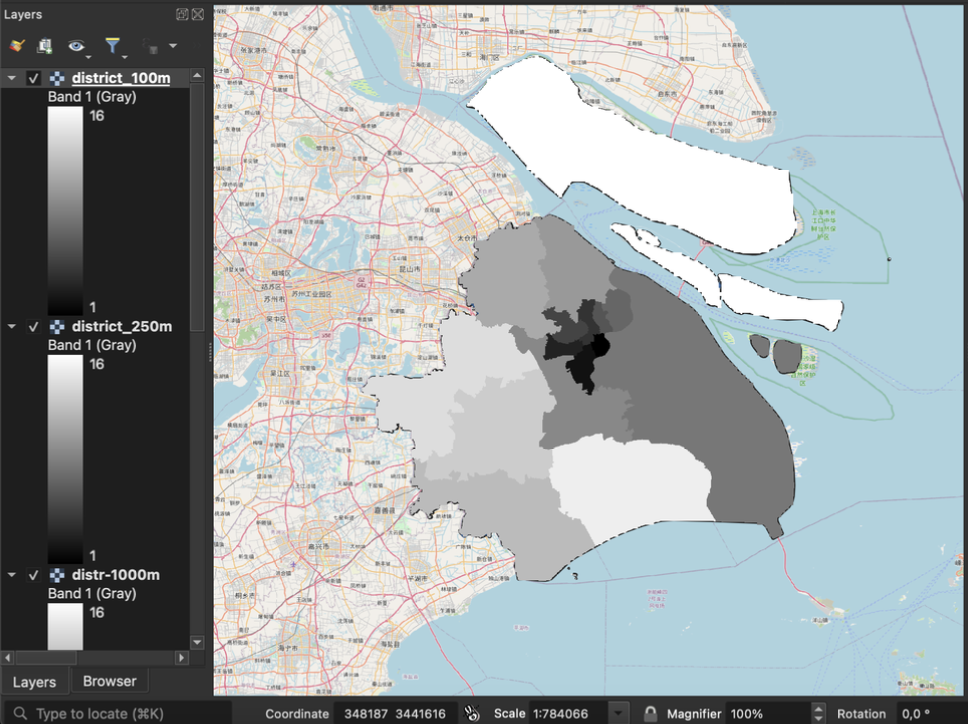

Lab 04 · October 2026
The Same Layer, Four Cell Sizes
The question
How much area does Putuo District occupy in Shanghai, and how does the measured area change when the same district boundaries are represented as vector data and as rasters with 1,000 m, 250 m, 100 m, and 30 m cells?
The data
I used two files provided through the SOCS-SHU 205 Brightspace page and retrieved on 10 October 2026: LAB04_shanghai-lockdown-survey.csv and LAB04_shanghai-districts.geojson.
The district boundary file contains the sixteen districts of Shanghai. The polygons come from DataV.GeoAtlas, a boundary service published by Alibaba. The boundary file does not state a licence, accuracy figure, or contact information, so I use it to produce derived measurements and maps rather than redistribute the original file.
The survey contains 3,348 respondent records. When I first loaded the CSV in QGIS, the Chinese text displayed incorrectly because QGIS assumed UTF-8 encoding. I reloaded the file using GB18030, after which fields such as Jiedao/town displayed correctly.
Although the CSV contains 3,348 rows, only 2,795 respondents have usable coordinates. The remaining 553 records, or approximately 16.5% of the survey, contain (空) instead of a usable location.
Detailed postal addresses were removed from the course-provided version before I received the survey. The original GPS information could include streets, lanes, room numbers, and apartment-level information. The handout does not identify the individual who performed this removal. The coordinates were retained, which means the location information can still be identifying.
The survey itself is not public and is not mine to redistribute. For this reason, I do not upload the source CSV or publish maps that reveal individual respondents at building level.
The method
I carried out the analysis in QGIS 3.44. I reprojected the Shanghai district polygons and survey points to EPSG:32651 — WGS 84 / UTM Zone 51N, allowing planimetric measurements in metres.
I first compared the area of the same Shanghai district boundaries in several coordinate frames. The geodetic WGS 84 total was 7,988.523 km². The same polygons measured 10,955.302 km² in EPSG:3857 Web Mercator, 7,986.346 km² in EPSG:32651 UTM 51N, 7,992.613 km² in EPSG:4549, and 8,089.649 km² in EPSG:4547.
For the raster analysis I used the exact extent 295000, 430000, 3393000, 3528000 in EPSG:32651.
I rasterized the same sixteen district polygons at four cell sizes:
1,000 m, 250 m, 100 m, and 30 m.
I burned the survey_code field into the raster and used
Byte as the output data type.
The main QGIS tools used were Reproject layer, Join attributes by location, Rasterize (vector to raster), Sample raster values, Raster layer unique values report, and Basic statistics for fields.
I used a point-in-polygon spatial join to compare the district recorded in the survey with the district containing each respondent's mapped coordinate. The join processed 2,795 mapped respondents and identified 245 district mismatches.
I also tested sensitivity to grid origin. I rasterized the districts again at 1 km using the shifted extent 294500, 430500, 3392500, 3528500. This moved the grid by half of a 1 km cell in both directions while keeping the underlying district polygons unchanged.
The map
The figures below show how the same Shanghai data changes when it is represented at different raster resolutions and compared with the survey locations.
QGIS project files

Figure 1 · Shanghai districts at 1 km and 30 m


Figure 2 · The raster boundary staircase

Figure 3 · Records whose district and coordinate disagree

Figure 4 · Shanghai districts at 100 m resolution

What I found
Areas measured planar in EPSG:32651 (WGS 84 / UTM 51N), which departs from the ellipsoidal area by under 0.03 per cent at this latitude. Gridded areas were computed by cell count on a 30 m grid with origin 295000, 3528000; shifting that origin by half a cell moves a small district by several per cent, so gridded figures are reported to no better than the nearest per cent.
Projection
Projection produced a large difference in the measured total area of Shanghai. The geodetic WGS 84 result was 7,988.523 km², while the Web Mercator planar result was 10,955.302 km², approximately 37.14% larger.
Before measuring, I predicted Web Mercator inflation of about 36.6%. The measured difference of 37.14% was very close to that prediction.
In comparison, the EPSG:32651 UTM 51N result was 7,986.346 km², only approximately 0.027% below the geodetic result.
Raster storage
Raster storage increased rapidly as the cell size became smaller. The 1 km raster contained 18,225 cells and was about 19 KB. The 250 m raster contained 291,600 cells and was about 292 KB.
At 100 m the raster contained 1,822,500 cells and was approximately 1.8 MB. At 30 m it contained 20,250,000 cells and grew to approximately 20.3 MB.
This demonstrates the square relationship between spatial resolution and raster storage: reducing the cell dimension increases the number of cells across both the width and height of the grid.
High compression reduced my 30 m raster from about 20.3 MB to 271 KB. This shows that the raster is highly redundant because many neighbouring cells contain the same district value.
Vector and raster queries
The original vector spatial join completed in approximately 0.09 seconds. Sampling both my 30 m and 100 m rasters took approximately 0.15 seconds in my QGIS runs.
The 30 m raster agreed with the vector join for 2,794 of 2,795 points, while the 100 m raster agreed for 2,789 of 2,795 points. The coarser raster therefore lost slightly more positional detail.
Sparse point data
Rasterizing the survey points showed how inefficient a raster can be for sparse object-like data. At 30 m resolution, the grid contained 20,250,000 cells, but only 2,568 cells contained a respondent. This is only approximately 0.013% of the grid.
Several respondents can also collapse into the same raster cell. There were 2,795 mapped respondents but only 2,568 occupied 30 m cells.
Internal inconsistency
The spatial join identified 245 inconsistent records among 2,795 mapped respondents, or approximately 8.8%. In these records, the mapped coordinate falls in a different district from the district recorded in the survey.
The largest repeated coordinate was 121.472644, 31.231706, in the People's Park / People's Square area. Eleven respondents with several different district codes shared this exact coordinate, suggesting that it may have been a fallback or default geocoding result rather than eleven people occupying the same precise location.
Sensitivity to grid origin
Moving the 1 km grid by only 500 m changed several district area estimates even though the source polygons and cell size stayed the same.
Xuhui changed from approximately 3.8% below its vector area in Grid A to 5.3% above it in Grid B, a 9.1 percentage-point swing.
This means the rasterized area is not determined by cell size alone. It also depends on the origin of the grid. I would therefore not treat either grid result as one definitive value; I would report the result together with the range produced by changing the grid origin.
The area I would publish for Putuo
I would publish the vector area of Putuo: 55.54 km² in EPSG:32651 — WGS 84 / UTM Zone 51N. This projected frame differs from the geodetic result by less than 0.03% for the overall Shanghai measurement and avoids the additional grid-origin sensitivity introduced by a coarse raster.
At 1 km resolution, Putuo changes from approximately 4.6% below its vector area in Grid A to 2.6% above it in Grid B. Because the sign and size of the error change when only the grid origin changes, I would not present either 1 km raster value as more authoritative than the underlying vector measurement.
What this does not show
The maps do not show that 245 of the 2,795 mapped respondents, or 8.8%, have coordinates that disagree with their recorded district. The available data does not establish whether the coordinate or the self-reported district should be treated as the correct one.
The spatial analysis also excludes 553 of the 3,348 survey records, approximately 16.5%, because those respondents do not have usable coordinates. Spatial results therefore describe only the subset of respondents who could be mapped.
Fine raster cells also do not guarantee that the source boundary was originally mapped at the same level of precision. The district boundary data has an underlying effective spatial resolution of approximately 600 m. A 30 m or 100 m raster can therefore create the appearance of greater precision than the source geometry actually supports.
Location also creates a privacy limitation. Coordinates recorded to six decimal places can effectively identify an address when reverse-geocoded. I therefore do not publish the original survey CSV, building-level respondent maps, or a 30 m respondent raster zoomed to individual cells.
The Shanghai boundary file also carries no stated licence. I therefore publish derived figures and measurements rather than redistributing the source boundary file, and I record its DataV.GeoAtlas source and retrieval context.
AI disclosure
I used ChatGPT to clarify parts of the lab instructions, troubleshoot QGIS steps, check calculations, and check my HTML code. I verified the numerical results using my own QGIS outputs and the Lab 4 instructions. The maps, measurements, screenshots, and final interpretation are based on my own lab work.
← Back to all labs